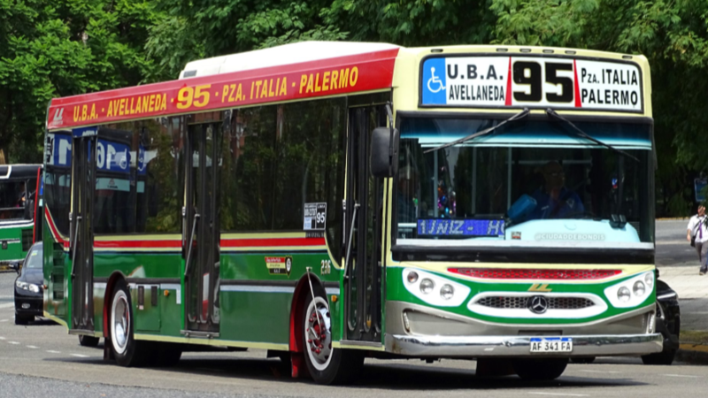

Línea 95
Servicio rápido y seguro que conecta el Centro de Transporte Inteligente con las sedes y campus académicos principales de la zona urbana.
Destinos Principales
- Campus Central (Ingeniería y Ciencias Exactas)
- Anexo Almagro (Medicina y Psicología)
- Ciudad Universitaria (Diseño y Humanidades)
Beneficio Estudiantil
El servicio es 100% gratuito para estudiantes regulares, docentes y no docentes presentando la credencial universitaria digital al subir a la unidad.
Recorrido y Paradas Oficiales
La Línea 95 opera mediante un corredor troncal optimizado para asegurar la llegada a tiempo a las clases.

Terminal CTI (Salida)
Plataforma 4 del Centro de Transporte Inteligente. Combinación con líneas interurbanas.
Parada Campus Central
Av. Universidad 1200. Conexión peatonal directa con el ingreso al buffet y biblioteca.
Parada Anexo Almagro
Calle Rivadavia y Esquina Italia. Punto clave frente al Hospital Universitario.
Terminal Ciudad Universitaria
Rotonda central de pabellones. Parada final equipada con refugio techado e iluminación LED.
Descripción del Recorrido:
El recorrido de la Línea UADE conecta el campus central con las principales terminales de transporte y residencias estudiantiles. Cuenta con paradas estratégicas y pantallas inteligentes que muestran tiempos de espera en tiempo real.
Horarios y Frecuencias del Servicio
Los colectivos funcionan de lunes a viernes exclusivamente durante el ciclo lectivo universitario.
| Turno | Horario de Cobertura | Frecuencia Aproximada |
|---|---|---|
| Mañana (Hora Pico) | 06:30 h - 09:30 h | Cada 10 minutos |
| Intermedio | 09:30 h - 12:00 h | Cada 20 minutes |
| Mediodía (Hora Pico) | 12:00 h - 14:30 h | Cada 12 minutos |
| Tarde / Noche | 14:30 h - 22:30 h | Cada 15 minutos |
♿ Características de Accesibilidad e Inclusión
En total consonancia con los principios del CTI, nuestro servicio está diseñado bajo normativas de accesibilidad universal para garantizar un viaje seguro a toda la comunidad estudiantil:
- Unidades de piso bajo: Colectivos equipados con rampas automáticas de acceso para sillas de ruedas y movilidad reducida.
- Espacios exclusivos: Dos sectores reservados por coche provistos de anclajes de seguridad y cinturones especiales.
- Señalización accesible: Pantallas de alto contraste en el interior y parlantes integrados que anuncian por voz la próxima parada.
- Diseño web inclusivo: El portal utiliza fuentes tipográficas legibles y una paleta de colores de alto contraste que facilita la lectura a personas con disminución visual.
Mapa del recorrido